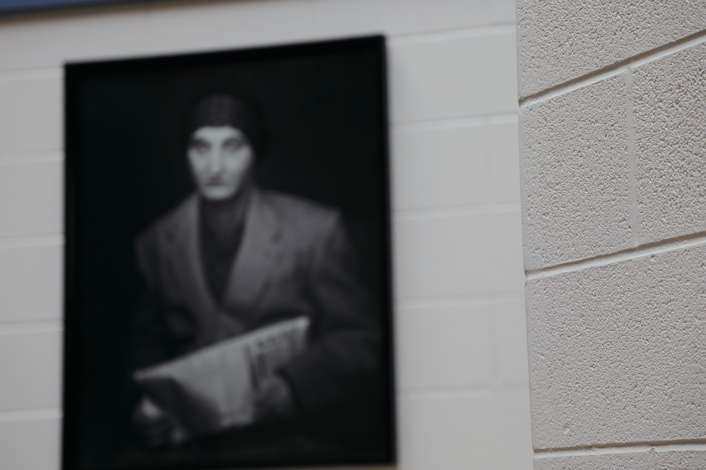
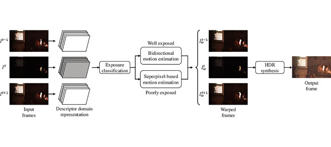

Current focus
Model-based vision systems
Building deep unrolling methods for defocus deblurring, joint low-light enhancement, and physically grounded image restoration.
Research Scientist / Computer Vision / Seoul
Research Scientist at KC Machine Learning Lab (ML2)
I work on computer vision and deep learning, with a focus on image restoration problems such as deblurring, low-light enhancement, and HDR imaging.
I received my M.S. from CILAB at Pukyong National University, and my B.S. in Electrical Engineering from Hanoi University of Science and Technology. I am always open to new opportunities and collaborations.
Current focus
Building deep unrolling methods for defocus deblurring, joint low-light enhancement, and physically grounded image restoration.
Recent milestone
My recent work on error-aware deep unrolling for single-image defocus deblurring was accepted to the NeurIPS workshop on Constrained Optimization for Machine Learning.
Open to
I enjoy connecting on research collaborations, applied computer vision projects, and industry-facing work that benefits from rigorous vision models.
Updates
Recent milestones, accepted papers, and activities.
ErA accepted to NeurIPS COML 2025
Our paper ErA: Error-Aware Deep Unrolling Network for Single Image Defocus Debluring was accepted, and the poster is available.
JUDE accepted to WACV 2025
Our paper Deep Joint Unrolling for Deblurring and Low-Light Image Enhancement (JUDE) was accepted to WACV 2025, with a project page.
6th place in the ICCV 2023 Budgeted Model Training Challenge
We ranked 6th in the Budgeted Model Training challenge at ICCV 2023.
Joined KC Machine Learning Lab
I joined KC Machine Learning Lab as a Research Scientist working on computer vision.
Attention! Stay Focus! published at CVPRW 2021
My paper Attention! Stay Focus! appeared in the CVPR Workshops.
Selected work
I am interested in computer vision and deep learning, especially low-level vision problems that require strong physical priors and robust restoration strategies.

An error-aware deep unrolling framework for single-image defocus deblurring with strong quantitative results across standard benchmarks.
A physically inspired joint restoration pipeline that tackles nighttime blur and low-light degradation in a single unrolled framework.
A challenge report on methods for training and inference under strict memory and time constraints, built around the ICCV 2023 RCV workshop tracks.

A model for generating all-in-focus imagery from dual-view inputs.

A method for synthesizing HDR video from alternating low dynamic range sequences using illumination-invariant motion estimation.
Community
A few ways I contribute beyond my published work.
Conference service
WACV 2025, ICLR 2025, and ECCV 2026.
Collaboration
If you are interested in my work, I am happy to talk about collaboration opportunities, applied research, or future projects.